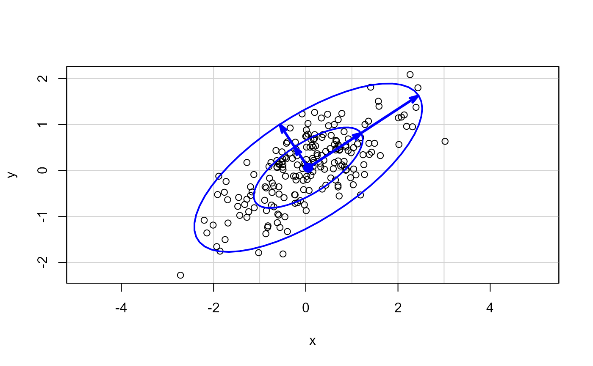
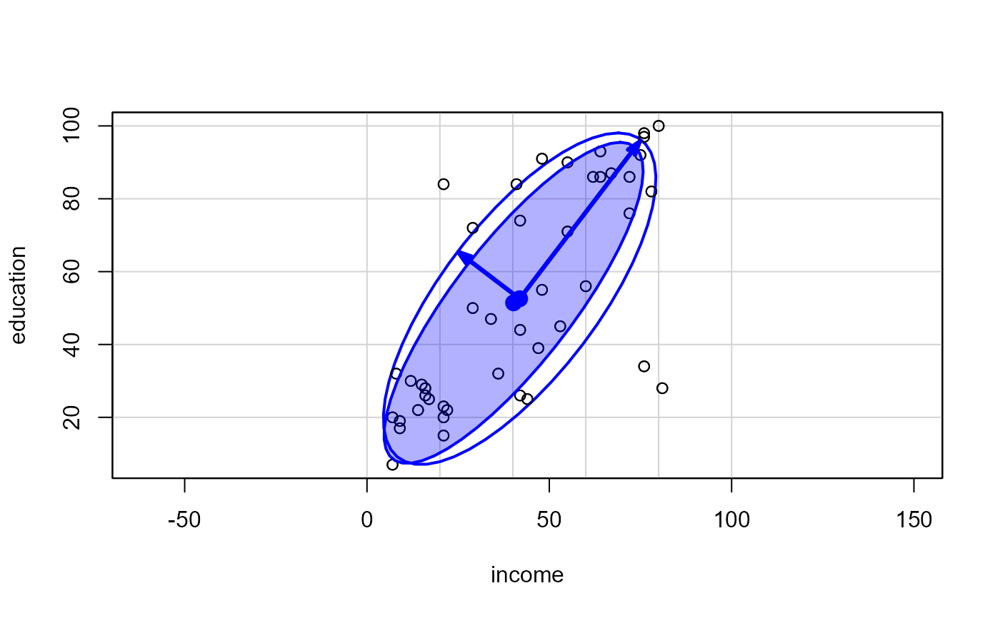

This function is designed for illustrating the eigenvectors associated with the covariance matrix for a given bivariate data set. It draws a data ellipse of the data and adds vectors showing the eigenvectors of the covariance matrix.
showEig(X, col.vec = "blue", lwd.vec = 3, mult = sqrt(qchisq(levels, 2)), asp = 1, levels = c(0.5, 0.95), plot.points = TRUE, add = !plot.points, ...)
| X | A two-column matrix or data frame |
|---|---|
| col.vec | color for eigenvectors |
| lwd.vec | line width for eigenvectors |
| mult | length multiplier(s) for eigenvectors |
| asp | aspect ratio of plot, set to |
| levels | passed to dataEllipse determining the coverage of the data ellipse(s) |
| plot.points | logical; should the points be plotted? |
| add | logical; should this call add to an existing plot? |
| ... | other arguments passed to |
x <- rnorm(200) y <- .5 * x + .5 * rnorm(200) X <- cbind(x,y) showEig(X)#> Warning: Recycling array of length 1 in array-vector arithmetic is deprecated. #> Use c() or as.vector() instead.#> Warning: Recycling array of length 1 in array-vector arithmetic is deprecated. #> Use c() or as.vector() instead.#> Warning: Recycling array of length 1 in array-vector arithmetic is deprecated. #> Use c() or as.vector() instead.#> Warning: Recycling array of length 1 in array-vector arithmetic is deprecated. #> Use c() or as.vector() instead.#> Warning: Recycling array of length 1 in array-vector arithmetic is deprecated. #> Use c() or as.vector() instead.#> Warning: Recycling array of length 1 in array-vector arithmetic is deprecated. #> Use c() or as.vector() instead.#> Warning: Recycling array of length 1 in array-vector arithmetic is deprecated. #> Use c() or as.vector() instead.#> Warning: Recycling array of length 1 in array-vector arithmetic is deprecated. #> Use c() or as.vector() instead.#> Warning: Recycling array of length 1 in array-vector arithmetic is deprecated. #> Use c() or as.vector() instead.#> Warning: Recycling array of length 1 in array-vector arithmetic is deprecated. #> Use c() or as.vector() instead.# Duncan data data(Duncan, package="car") showEig(Duncan[, 2:3], levels=0.68)#> Warning: Recycling array of length 1 in array-vector arithmetic is deprecated. #> Use c() or as.vector() instead.#> Warning: Recycling array of length 1 in array-vector arithmetic is deprecated. #> Use c() or as.vector() instead.#> Warning: Recycling array of length 1 in array-vector arithmetic is deprecated. #> Use c() or as.vector() instead.#> Warning: Recycling array of length 1 in array-vector arithmetic is deprecated. #> Use c() or as.vector() instead.#> Warning: Recycling array of length 1 in array-vector arithmetic is deprecated. #> Use c() or as.vector() instead.#> Warning: Recycling array of length 1 in array-vector arithmetic is deprecated. #> Use c() or as.vector() instead.#> Warning: Recycling array of length 1 in array-vector arithmetic is deprecated. #> Use c() or as.vector() instead.#> Warning: Recycling array of length 1 in array-vector arithmetic is deprecated. #> Use c() or as.vector() instead.#> Warning: Recycling array of length 1 in array-vector arithmetic is deprecated. #> Use c() or as.vector() instead.#> Warning: Recycling array of length 1 in array-vector arithmetic is deprecated. #> Use c() or as.vector() instead.#> Warning: Recycling array of length 1 in array-vector arithmetic is deprecated. #> Use c() or as.vector() instead.#> Warning: Recycling array of length 1 in array-vector arithmetic is deprecated. #> Use c() or as.vector() instead.#> Warning: Recycling array of length 1 in array-vector arithmetic is deprecated. #> Use c() or as.vector() instead.#> Warning: Recycling array of length 1 in array-vector arithmetic is deprecated. #> Use c() or as.vector() instead.showEig(Duncan[,2:3], levels=0.68, robust=TRUE, add=TRUE, fill=TRUE)#> Warning: Recycling array of length 1 in array-vector arithmetic is deprecated. #> Use c() or as.vector() instead.#> Warning: Recycling array of length 1 in array-vector arithmetic is deprecated. #> Use c() or as.vector() instead.#> Warning: Recycling array of length 1 in array-vector arithmetic is deprecated. #> Use c() or as.vector() instead.#> Warning: Recycling array of length 1 in array-vector arithmetic is deprecated. #> Use c() or as.vector() instead.#> Warning: Recycling array of length 1 in array-vector arithmetic is deprecated. #> Use c() or as.vector() instead.#> Warning: Recycling array of length 1 in array-vector arithmetic is deprecated. #> Use c() or as.vector() instead.#> Warning: Recycling array of length 1 in array-vector arithmetic is deprecated. #> Use c() or as.vector() instead.#> Warning: Recycling array of length 1 in array-vector arithmetic is deprecated. #> Use c() or as.vector() instead.#> Warning: Recycling array of length 1 in array-vector arithmetic is deprecated. #> Use c() or as.vector() instead.#> Warning: Recycling array of length 1 in array-vector arithmetic is deprecated. #> Use c() or as.vector() instead.#> Warning: Recycling array of length 1 in array-vector arithmetic is deprecated. #> Use c() or as.vector() instead.#> Warning: Recycling array of length 1 in array-vector arithmetic is deprecated. #> Use c() or as.vector() instead.#> Warning: Recycling array of length 1 in array-vector arithmetic is deprecated. #> Use c() or as.vector() instead.#> Warning: Recycling array of length 1 in array-vector arithmetic is deprecated. #> Use c() or as.vector() instead.